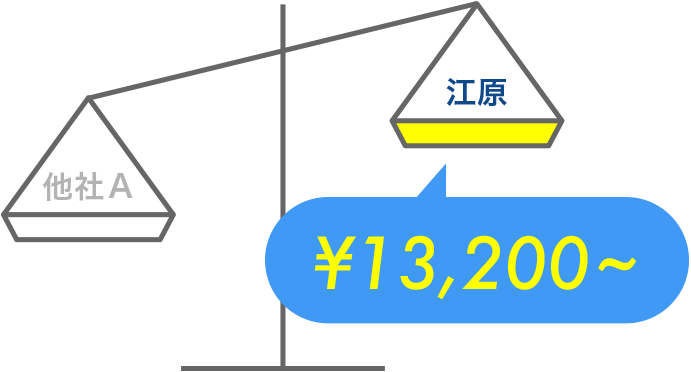
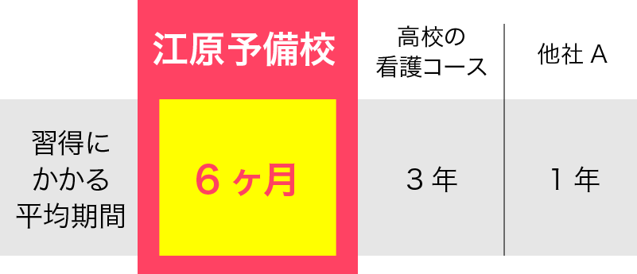
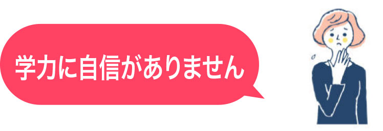
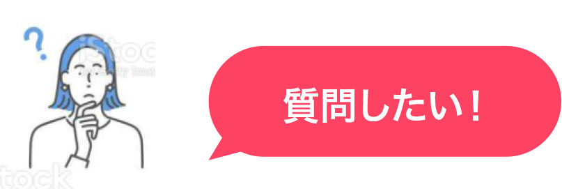
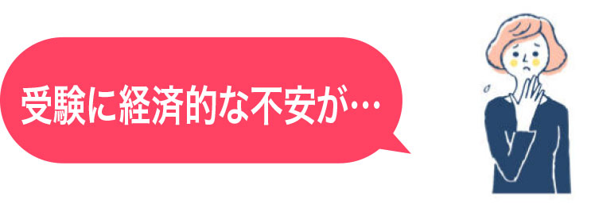
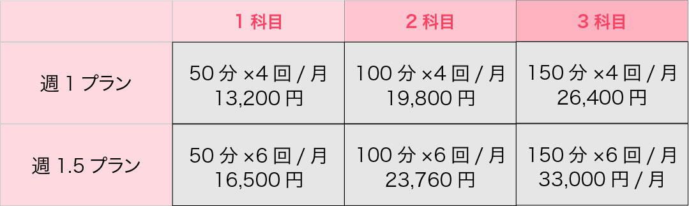

看護学校受験通信講座
自宅があなたの「学習ジム」。
10年連続90%以上合格
看護学部は学費免除支援制度も充実しています。
詳しくはお問い合わせへ→
江原予備校の看護学校受験通信講座を選ぶ理由
オリジナルテキストだから
実現できる安心価格
★なんかいい感じの言葉なんかいい感じの言葉なんかいい感じの言葉なんかいい感じの言葉なんかいい感じの言葉

江原予備校の看護学校受験通信講座を選ぶ理由
短期間で習得可能
★なんかいい感じの言葉なんかいい感じの言葉なんかいい感じの言葉なんかいい感じの言葉なんかいい感じの言葉


中学範囲からカバーします！
私たちは長年経験を積んできました。これだけやればよいという内容を示すことができます。自信を持ってお勧めします

プロ講師がオンラインで指導します
・当校テキストで学習します。・テキストをダウンロードします。 ・自分で学習することも可能です。 動画で説明しています。 ・わからないところは プロ講師が直接指導します。

保障制度が充実しています。
ああああああああああああああああああああああああああああああああ
いっしょにがんばろうぜ！
選べる3つのコース
江原予備校の通信講座は 負担になりづらい低料金！
低料金！自分でこつこつ勉強したい方へ
ライトコース
質問指導などもできる人気コース
ベーシックコース
学力に不安のある方・面接指導も万全に
プレミアムコース
※別途テキスト送料がかかります。（1科目530円） ※価格は全て税込です。
対応科目
● 中学復習数学（1・A） ● 中学復習英語 ● 国語（小論文）
Zoom個別指導オプション
月額1万円台から追加質問も可能！
吹き出し
タイトル類
画像
「なんとかかんとかなんとかかんとかなんとかかんとかなんとかかんとかなんとかかんとかなんとかかんとかなんとかかんとかなんとかかんとかなんとかかんとかなんとかかんとかなんとかかん」
スケジュール